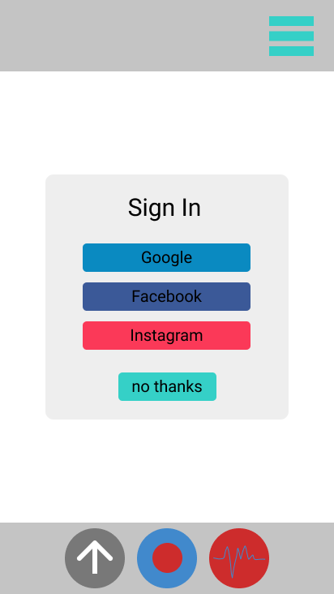
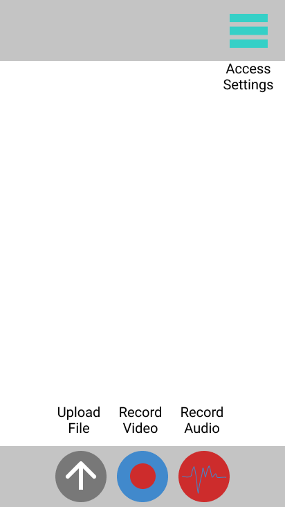
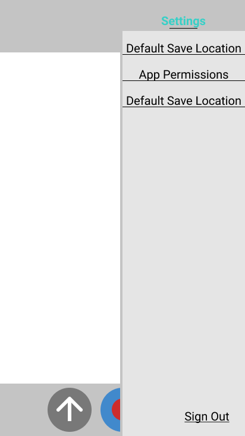
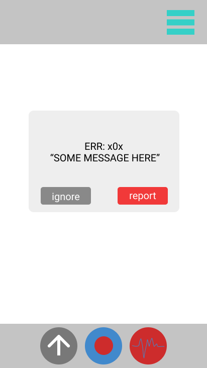

User Guide
Overview
Fact Check is the fastest way to find if those pesky news outlets are telling the truth! We scan over millions of trusted articles to find the truth for you! You no longer have any need to check for yourself!
This app also works great to put your stupid friends in their place!
Sign In
To use are app, you will need to connect all of listed social media accounts. (if you don't have one, make one) We need to figure out how to get you the right facts after all. Simply follow the prompts and agree to everything you see!
To know what we do with your data please take a look at our User Information Privacy Statement

Basic Controls
- Middle button records video to upload and fact check, Premium users can use video stream which overlays the facts over the fallacies
- Left button allows user to upload documents, videos, and photos for fact checking
- Right button records video to upload and fact check, Premium users can use audio stream which turns the screen green when the truth is being spoken, red if it is false
- The top right buttons allows you to access the settings where you can change some of the behavior of the app. (see blow for more)

Settings Panel
- Default Save Location: change where recorded files are saved
- App permissions: add permissions for the app to do cooler things. Premium users must give Admin permissions to app for their paid for features
Info
users are unable to deny app permissions after they are given

Error Codes
Errors happen! if you see something similar to this on your screen here is an ordered list of what you can do!
- try to restart the app
- look online at our FAQ
- Call our tech support at 1-800-WHAT-IS-TRUTH and describe your issue
